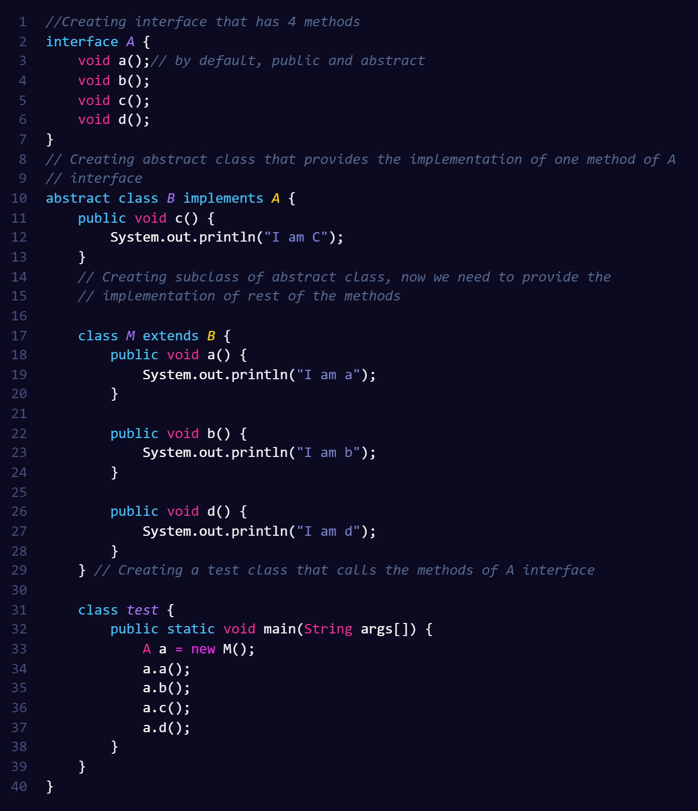

Abstract class and interface both are used to achieve abstraction where we can declare the abstract methods. Abstract class and interface both can't be instantiated.But there are many differences between abstract class and interface that are given below. An abstract class permits you to make functionality that subclasses can implement or override whereas an interface only permits you to state functionality but not to implement it. A class can extend only one abstract class while a class can implement multiple interfaces.
| Abstract classes | Interfaces |
|---|---|
| 1) Abstract class can have abstract and non-abstract methods. | 1) An interface can have only abstract methods. Since Java 8, it can have default and static methods also. |
| 2) Abstract class doesn't support multiple inheritance. | 2) Interface supports multiple inheritance. |
| 3) Abstract class can have final, non-final, static and non-static variables. | 3) Interface has only static and final variables. |
| 4) Abstract class can provide the implementation of an interface. | 4) Interface can't provide the implementation of an abstract class. |
| 5) The abstract keyword is used to declare an abstract class. | 5) The interface keyword is used to declare the interface. |
| 6) An abstract class can extend another Java class and implement multiple Java interfaces. | 6) An interface can extend another Java interface only. |
| 7) An abstract class can be extended using the keyword “extends”. | 7) An interface class can be implemented using the keyword “implements”. |
| 8) A Java abstract class can have class members like private, protected, etc. | 8) Members of a Java interface are public by default. |
| 9) An abstract class has protected and public abstract methods. | 9) An interface can have only public abstract methods. |
| 10) It should be used when various implementations of the same kind share a common behavior. | 10) It is better to use interface when various implementations share only method signature. Polymorphic hierarchy of value types. |
Let's see a simple example where we are using interface and abstract class both.
